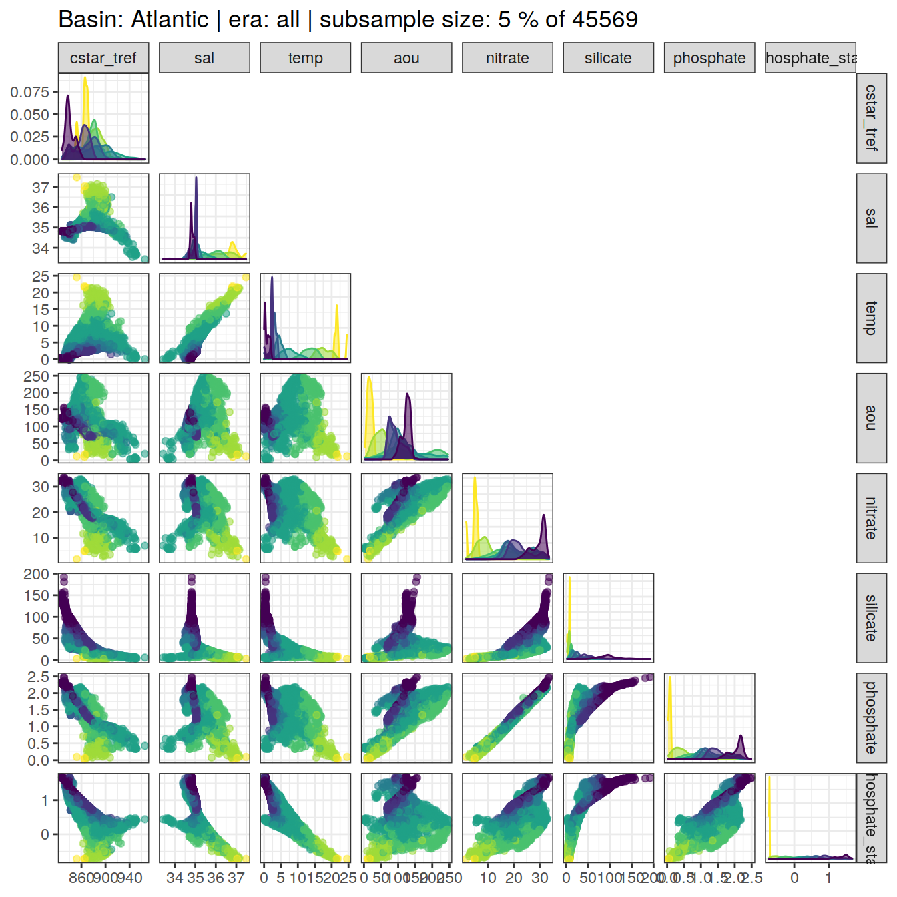
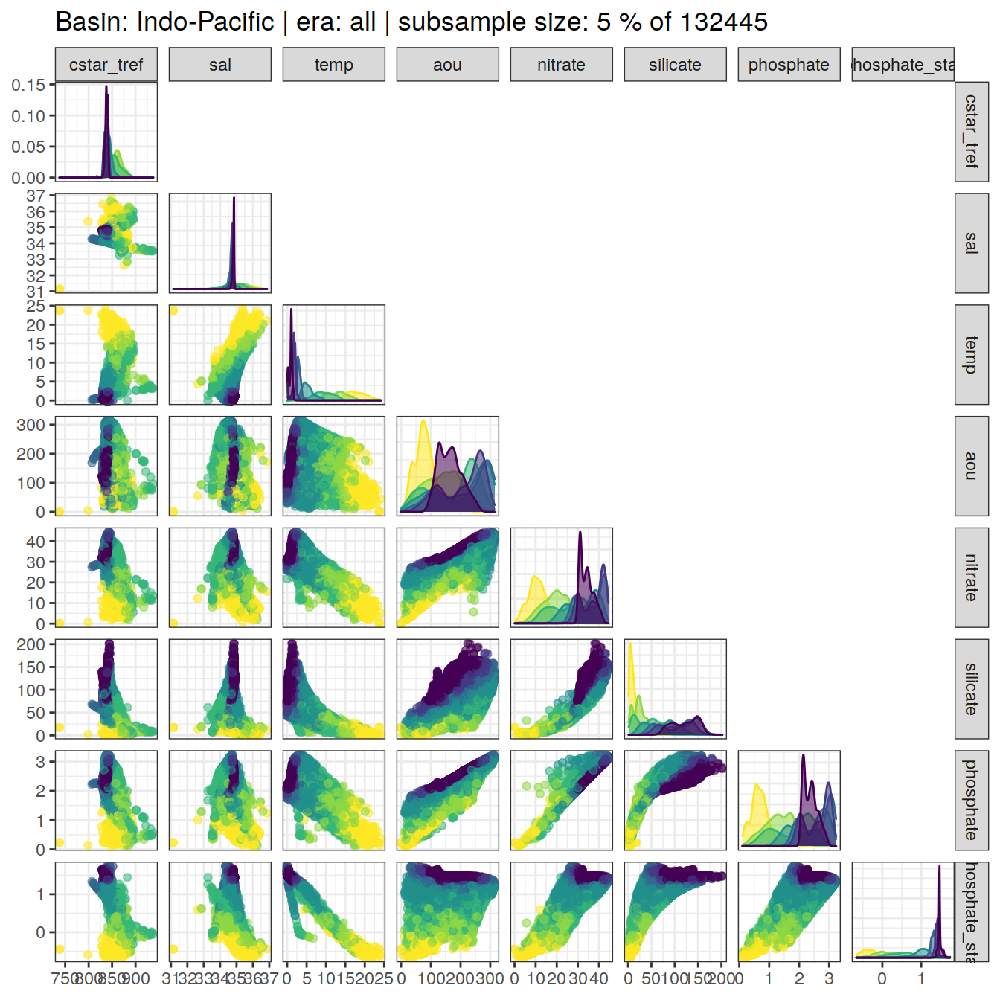
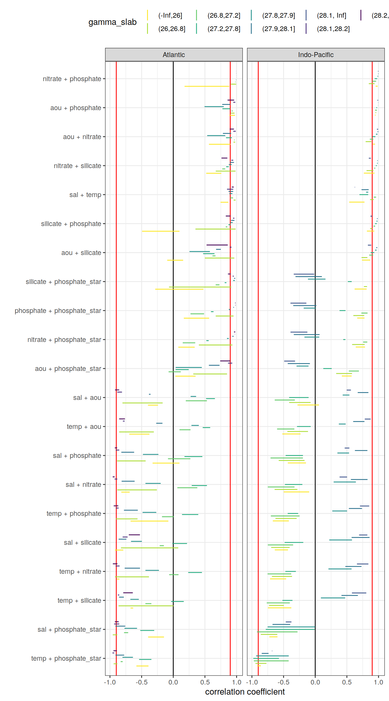
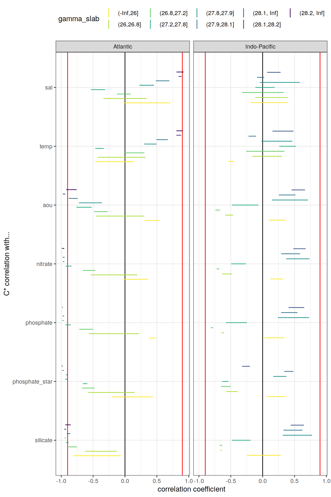

Last updated: 2021-01-30
Checks: 7 0
Knit directory: emlr_mod_v_109/
This reproducible R Markdown analysis was created with workflowr (version 1.6.2). The Checks tab describes the reproducibility checks that were applied when the results were created. The Past versions tab lists the development history.
Great! Since the R Markdown file has been committed to the Git repository, you know the exact version of the code that produced these results.
Great job! The global environment was empty. Objects defined in the global environment can affect the analysis in your R Markdown file in unknown ways. For reproduciblity it’s best to always run the code in an empty environment.
The command set.seed(20200707) was run prior to running the code in the R Markdown file. Setting a seed ensures that any results that rely on randomness, e.g. subsampling or permutations, are reproducible.
Great job! Recording the operating system, R version, and package versions is critical for reproducibility.
Nice! There were no cached chunks for this analysis, so you can be confident that you successfully produced the results during this run.
Great job! Using relative paths to the files within your workflowr project makes it easier to run your code on other machines.
Great! You are using Git for version control. Tracking code development and connecting the code version to the results is critical for reproducibility.
The results in this page were generated with repository version ac946e2. See the Past versions tab to see a history of the changes made to the R Markdown and HTML files.
Note that you need to be careful to ensure that all relevant files for the analysis have been committed to Git prior to generating the results (you can use wflow_publish or wflow_git_commit). workflowr only checks the R Markdown file, but you know if there are other scripts or data files that it depends on. Below is the status of the Git repository when the results were generated:
Ignored files:
Ignored: .Rproj.user/
Unstaged changes:
Modified: analysis/_site.yml
Modified: data/auxillary/params_local.rds
Note that any generated files, e.g. HTML, png, CSS, etc., are not included in this status report because it is ok for generated content to have uncommitted changes.
These are the previous versions of the repository in which changes were made to the R Markdown (analysis/eMLR_assumption_testing.Rmd) and HTML (docs/eMLR_assumption_testing.html) files. If you’ve configured a remote Git repository (see ?wflow_git_remote), click on the hyperlinks in the table below to view the files as they were in that past version.
| File | Version | Author | Date | Message |
|---|---|---|---|---|
| Rmd | ef2f7b2 | Jens Müller | 2021-01-29 | Initial commit |
Required are:
GLODAP <-
read_csv(paste(path_version_data,
"GLODAPv2.2020_MLR_fitting_ready.csv",
sep = ""))The correlation between:
were investigated based on:
For an overview, a random subset of data from all eras was plotted separately for both basins, with color indicating neutral density slabs (high density = dark-purple color).
for (i_basin in unique(GLODAP$basin)) {
# i_basin <- unique(GLODAP$basin)[1]
print(
GLODAP %>%
filter(basin == i_basin) %>%
sample_frac(0.05) %>%
ggpairs(columns = c(params_local$MLR_target,
params_local$MLR_predictors),
upper = "blank",
ggplot2::aes(col = gamma_slab, fill = gamma_slab, alpha = 0.01)) +
scale_fill_viridis_d(direction = -1) +
scale_color_viridis_d(direction = -1) +
labs(title = paste("Basin:", i_basin ,"| era: all | subsample size: 5 % of",
nrow(GLODAP %>% filter(basin == i_basin))))
)
}
Individual correlation plots for each basin, era and neutral density (gamma) slab are available at:
/nfs/kryo/work/jenmueller/emlr_cant/model/v_109/figures/Observations_correlation/
if (params_local$plot_all_figures == "y") {
for (i_basin in unique(GLODAP$basin)) {
for (i_era in unique(GLODAP$era)) {
# i_basin <- unique(GLODAP$basin)[1]
# i_era <- unique(GLODAP$era)[1]
GLODAP_basin_era <- GLODAP %>%
filter(basin == i_basin,
era == i_era)
for (i_gamma_slab in unique(GLODAP_basin_era$gamma_slab)) {
# i_gamma_slab <- unique(GLODAP_basin_era$gamma_slab)[5]
GLODAP_highlight <- GLODAP_basin_era %>%
mutate(gamma_highlight = if_else(gamma_slab == i_gamma_slab,
"in", "out")) %>%
arrange(desc(gamma_highlight))
p <- GLODAP_highlight %>%
ggpairs(
columns = c(params_local$MLR_target,
params_local$MLR_predictors),
ggplot2::aes(
col = gamma_highlight,
fill = gamma_highlight,
alpha = 0.01
)
) +
scale_fill_manual(values = c("red", "grey")) +
scale_color_manual(values = c("red", "grey")) +
labs(
title = paste(
i_era,
"|",
i_basin,
"| Gamma slab",
i_gamma_slab,
"| # obs total",
nrow(GLODAP_basin_era),
"| # obs slab",
nrow(GLODAP_highlight %>%
filter(gamma_highlight == "in"))
)
)
png(
filename = paste(
path_version_figures,
"Observations_correlation/",
paste(
"Predictor_correlation",
i_era,
i_basin,
i_gamma_slab,
".png",
sep = "_"
),
sep = ""),
width = 12,
height = 12,
units = "in",
res = 300
)
print(p)
dev.off()
}
}
}
}Correlation coefficients were calculated individually within each slabs, era and basin.
for (i_basin in unique(GLODAP$basin)) {
for (i_era in unique(GLODAP$era)) {
# i_basin <- unique(GLODAP$basin)[1]
# i_era <- unique(GLODAP$era)[1]
GLODAP_basin_era <- GLODAP %>%
filter(basin == i_basin,
era == i_era) %>%
select(basin,
era,
gamma_slab,
params_local$MLR_target,
params_local$MLR_predictors)
for (i_gamma_slab in unique(GLODAP_basin_era$gamma_slab)) {
# i_gamma_slab <- unique(GLODAP_basin_era$gamma_slab)[5]
print(i_gamma_slab)
GLODAP_basin_era_slab <- GLODAP_basin_era %>%
filter(gamma_slab == i_gamma_slab)
# calculate correlation table
cor_target_predictor_temp <- GLODAP_basin_era_slab %>%
select(-c(basin, era, gamma_slab)) %>%
correlate() %>%
focus(params_local$MLR_target) %>%
mutate(basin = i_basin,
era = i_era,
gamma_slab = i_gamma_slab)
if (exists("cor_target_predictor")) {
cor_target_predictor <-
bind_rows(cor_target_predictor, cor_target_predictor_temp)
}
if (!exists("cor_target_predictor")) {
cor_target_predictor <- cor_target_predictor_temp
}
cor_predictors_temp <- GLODAP_basin_era_slab %>%
select(-c(basin, era, gamma_slab)) %>%
correlate() %>%
shave %>%
stretch() %>%
filter(!is.na(r),
x != params_local$MLR_target,
y != params_local$MLR_target) %>%
mutate(pair = paste(x, y, sep = " + ")) %>%
select(-c(x, y)) %>%
mutate(basin = i_basin,
era = i_era,
gamma_slab = i_gamma_slab)
if (exists("cor_predictors")) {
cor_predictors <- bind_rows(cor_predictors, cor_predictors_temp)
}
if (!exists("cor_predictors")) {
cor_predictors <- cor_predictors_temp
}
}
}
}
rm(cor_predictors_temp, cor_target_predictor_temp,
i_gamma_slab, i_era, i_basin,
GLODAP_basin_era, GLODAP_basin_era_slab)Below, the range of correlations coefficients for each predictor pair is plotted per basin (facet) and density slab (color). Note that the range indicates the min and max values of in total 3 calculated coefficients (one per era).
# calculate min, max, mean across all eras
cor_predictors_stats <- cor_predictors %>%
group_by(pair, basin, gamma_slab) %>%
summarise(mean_r = mean(r),
min_r = min(r),
max_r = max(r)) %>%
ungroup()
# plot figure
cor_predictors_stats %>%
mutate(pair = reorder(pair, mean_r)) %>%
ggplot() +
geom_vline(xintercept = c(-0.9, 0.9), col = "red") +
geom_vline(xintercept = 0) +
geom_linerange(
aes(y = pair, xmin = min_r, xmax = max_r, col = gamma_slab),
position = position_dodge(width = 0.6)) +
facet_wrap(~basin) +
scale_color_viridis_d(direction = -1) +
labs(x = "correlation coefficient", y = "") +
theme(legend.position = "top")
# print table
kable(cor_predictors_stats) %>%
add_header_above() %>%
kable_styling() %>%
scroll_box(width = "100%", height = "400px")| pair | basin | gamma_slab | mean_r | min_r | max_r |
|---|---|---|---|---|---|
| aou + nitrate | Atlantic | (-Inf,26] | 0.7335650 | 0.5633370 | 0.9037929 |
| aou + nitrate | Atlantic | (26,26.8] | 0.9614940 | 0.9512917 | 0.9777034 |
| aou + nitrate | Atlantic | (26.8,27.2] | 0.9639292 | 0.9605678 | 0.9688275 |
| aou + nitrate | Atlantic | (27.2,27.8] | 0.8767477 | 0.8330114 | 0.9259812 |
| aou + nitrate | Atlantic | (27.8,27.9] | 0.6937011 | 0.5357846 | 0.8213063 |
| aou + nitrate | Atlantic | (27.9,28.1] | 0.8665800 | 0.7840879 | 0.9138719 |
| aou + nitrate | Atlantic | (28.1,28.2] | 0.9707503 | 0.9478695 | 0.9870507 |
| aou + nitrate | Atlantic | (28.2, Inf] | 0.9227102 | 0.8909483 | 0.9583416 |
| aou + nitrate | Indo-Pacific | (-Inf,26] | 0.9236312 | 0.9102931 | 0.9441280 |
| aou + nitrate | Indo-Pacific | (26,26.8] | 0.8533085 | 0.7963778 | 0.8856165 |
| aou + nitrate | Indo-Pacific | (26.8,27.2] | 0.8976863 | 0.8621399 | 0.9173394 |
| aou + nitrate | Indo-Pacific | (27.2,27.8] | 0.9276141 | 0.9041582 | 0.9501009 |
| aou + nitrate | Indo-Pacific | (27.8,27.9] | 0.9743641 | 0.9591573 | 0.9833057 |
| aou + nitrate | Indo-Pacific | (27.9,28.1] | 0.9916860 | 0.9851548 | 0.9958175 |
| aou + nitrate | Indo-Pacific | (28.1, Inf] | 0.9847029 | 0.9746634 | 0.9927489 |
| aou + phosphate | Atlantic | (-Inf,26] | 0.9305905 | 0.8861831 | 0.9749979 |
| aou + phosphate | Atlantic | (26,26.8] | 0.9373385 | 0.9100314 | 0.9673448 |
| aou + phosphate | Atlantic | (26.8,27.2] | 0.9321587 | 0.9207856 | 0.9382583 |
| aou + phosphate | Atlantic | (27.2,27.8] | 0.8355236 | 0.7761436 | 0.8985773 |
| aou + phosphate | Atlantic | (27.8,27.9] | 0.6590009 | 0.4935103 | 0.7976550 |
| aou + phosphate | Atlantic | (27.9,28.1] | 0.8529921 | 0.7727443 | 0.9025432 |
| aou + phosphate | Atlantic | (28.1,28.2] | 0.9671546 | 0.9471476 | 0.9802727 |
| aou + phosphate | Atlantic | (28.2, Inf] | 0.9013696 | 0.8574432 | 0.9612080 |
| aou + phosphate | Indo-Pacific | (-Inf,26] | 0.9501692 | 0.9437607 | 0.9549959 |
| aou + phosphate | Indo-Pacific | (26,26.8] | 0.9559597 | 0.9509788 | 0.9626376 |
| aou + phosphate | Indo-Pacific | (26.8,27.2] | 0.9619082 | 0.9457586 | 0.9741081 |
| aou + phosphate | Indo-Pacific | (27.2,27.8] | 0.9690098 | 0.9641734 | 0.9771667 |
| aou + phosphate | Indo-Pacific | (27.8,27.9] | 0.9920632 | 0.9908698 | 0.9928788 |
| aou + phosphate | Indo-Pacific | (27.9,28.1] | 0.9954643 | 0.9943682 | 0.9967042 |
| aou + phosphate | Indo-Pacific | (28.1, Inf] | 0.9881428 | 0.9819434 | 0.9932812 |
| aou + phosphate_star | Atlantic | (-Inf,26] | 0.1924238 | 0.0327941 | 0.3520535 |
| aou + phosphate_star | Atlantic | (26,26.8] | 0.5241981 | 0.3158522 | 0.8493992 |
| aou + phosphate_star | Atlantic | (26.8,27.2] | 0.0538375 | -0.0737499 | 0.1181858 |
| aou + phosphate_star | Atlantic | (27.2,27.8] | 0.1181420 | 0.0371682 | 0.2436302 |
| aou + phosphate_star | Atlantic | (27.8,27.9] | 0.2481067 | 0.0377108 | 0.4508169 |
| aou + phosphate_star | Atlantic | (27.9,28.1] | 0.6619425 | 0.5625282 | 0.7308603 |
| aou + phosphate_star | Atlantic | (28.1,28.2] | 0.9060784 | 0.8648456 | 0.9313898 |
| aou + phosphate_star | Atlantic | (28.2, Inf] | 0.8113440 | 0.7410136 | 0.9014739 |
| aou + phosphate_star | Indo-Pacific | (-Inf,26] | 0.5131357 | 0.4207238 | 0.5745539 |
| aou + phosphate_star | Indo-Pacific | (26,26.8] | 0.4519107 | 0.3308499 | 0.5809414 |
| aou + phosphate_star | Indo-Pacific | (26.8,27.2] | 0.6207769 | 0.5306028 | 0.6898821 |
| aou + phosphate_star | Indo-Pacific | (27.2,27.8] | 0.2141042 | 0.1271798 | 0.2604223 |
| aou + phosphate_star | Indo-Pacific | (27.8,27.9] | -0.2201712 | -0.2951048 | -0.1059482 |
| aou + phosphate_star | Indo-Pacific | (27.9,28.1] | -0.2657505 | -0.4340594 | -0.0842118 |
| aou + phosphate_star | Indo-Pacific | (28.1, Inf] | -0.4264246 | -0.4903509 | -0.3187680 |
| aou + silicate | Atlantic | (-Inf,26] | 0.0300308 | -0.0955795 | 0.1556412 |
| aou + silicate | Atlantic | (26,26.8] | 0.6762331 | 0.4991708 | 0.9642921 |
| aou + silicate | Atlantic | (26.8,27.2] | 0.6475217 | 0.6192714 | 0.6666780 |
| aou + silicate | Atlantic | (27.2,27.8] | 0.5387586 | 0.4712897 | 0.6507222 |
| aou + silicate | Atlantic | (27.8,27.9] | 0.4006662 | 0.2562936 | 0.5784041 |
| aou + silicate | Atlantic | (27.9,28.1] | 0.7039802 | 0.6761831 | 0.7513682 |
| aou + silicate | Atlantic | (28.1,28.2] | 0.9089292 | 0.8913280 | 0.9197396 |
| aou + silicate | Atlantic | (28.2, Inf] | 0.6504663 | 0.5258560 | 0.8606818 |
| aou + silicate | Indo-Pacific | (-Inf,26] | 0.7975318 | 0.7381372 | 0.8689219 |
| aou + silicate | Indo-Pacific | (26,26.8] | 0.7778776 | 0.7314744 | 0.8238287 |
| aou + silicate | Indo-Pacific | (26.8,27.2] | 0.8791042 | 0.8525929 | 0.9154384 |
| aou + silicate | Indo-Pacific | (27.2,27.8] | 0.9023803 | 0.8748270 | 0.9328901 |
| aou + silicate | Indo-Pacific | (27.8,27.9] | 0.9575906 | 0.9453204 | 0.9691235 |
| aou + silicate | Indo-Pacific | (27.9,28.1] | 0.9730112 | 0.9637747 | 0.9797846 |
| aou + silicate | Indo-Pacific | (28.1, Inf] | 0.8644368 | 0.8317016 | 0.8841020 |
| nitrate + phosphate | Atlantic | (-Inf,26] | 0.5312160 | 0.1782070 | 0.8842251 |
| nitrate + phosphate | Atlantic | (26,26.8] | 0.9442411 | 0.9096444 | 0.9930568 |
| nitrate + phosphate | Atlantic | (26.8,27.2] | 0.9825085 | 0.9787618 | 0.9846100 |
| nitrate + phosphate | Atlantic | (27.2,27.8] | 0.9932851 | 0.9907187 | 0.9947405 |
| nitrate + phosphate | Atlantic | (27.8,27.9] | 0.9983382 | 0.9980748 | 0.9987822 |
| nitrate + phosphate | Atlantic | (27.9,28.1] | 0.9990007 | 0.9985032 | 0.9993109 |
| nitrate + phosphate | Atlantic | (28.1,28.2] | 0.9966529 | 0.9958514 | 0.9975871 |
| nitrate + phosphate | Atlantic | (28.2, Inf] | 0.9935555 | 0.9930431 | 0.9940317 |
| nitrate + phosphate | Indo-Pacific | (-Inf,26] | 0.9692586 | 0.9542758 | 0.9866553 |
| nitrate + phosphate | Indo-Pacific | (26,26.8] | 0.9006493 | 0.8463246 | 0.9361745 |
| nitrate + phosphate | Indo-Pacific | (26.8,27.2] | 0.9362835 | 0.9012000 | 0.9615567 |
| nitrate + phosphate | Indo-Pacific | (27.2,27.8] | 0.9645625 | 0.9394047 | 0.9789873 |
| nitrate + phosphate | Indo-Pacific | (27.8,27.9] | 0.9900549 | 0.9833198 | 0.9937659 |
| nitrate + phosphate | Indo-Pacific | (27.9,28.1] | 0.9978961 | 0.9947882 | 0.9995380 |
| nitrate + phosphate | Indo-Pacific | (28.1, Inf] | 0.9956344 | 0.9911493 | 0.9982714 |
| nitrate + phosphate_star | Atlantic | (-Inf,26] | 0.2090337 | 0.0796168 | 0.3384507 |
| nitrate + phosphate_star | Atlantic | (26,26.8] | 0.6145762 | 0.4042500 | 0.9335554 |
| nitrate + phosphate_star | Atlantic | (26.8,27.2] | 0.2792578 | 0.1492914 | 0.3468528 |
| nitrate + phosphate_star | Atlantic | (27.2,27.8] | 0.5409553 | 0.5216799 | 0.5595181 |
| nitrate + phosphate_star | Atlantic | (27.8,27.9] | 0.8617192 | 0.8487183 | 0.8765060 |
| nitrate + phosphate_star | Atlantic | (27.9,28.1] | 0.9429681 | 0.9333189 | 0.9523135 |
| nitrate + phosphate_star | Atlantic | (28.1,28.2] | 0.9752914 | 0.9735561 | 0.9765542 |
| nitrate + phosphate_star | Atlantic | (28.2, Inf] | 0.9684011 | 0.9595406 | 0.9790465 |
| nitrate + phosphate_star | Indo-Pacific | (-Inf,26] | 0.7376466 | 0.6399507 | 0.7865135 |
| nitrate + phosphate_star | Indo-Pacific | (26,26.8] | 0.6719562 | 0.5828594 | 0.7805459 |
| nitrate + phosphate_star | Indo-Pacific | (26.8,27.2] | 0.7887535 | 0.7561575 | 0.8221895 |
| nitrate + phosphate_star | Indo-Pacific | (27.2,27.8] | 0.4621835 | 0.4420290 | 0.4766646 |
| nitrate + phosphate_star | Indo-Pacific | (27.8,27.9] | -0.0661202 | -0.1703642 | 0.0641935 |
| nitrate + phosphate_star | Indo-Pacific | (27.9,28.1] | -0.1549439 | -0.3386022 | 0.0688545 |
| nitrate + phosphate_star | Indo-Pacific | (28.1, Inf] | -0.2818770 | -0.3906295 | -0.1240913 |
| nitrate + silicate | Atlantic | (-Inf,26] | 0.6393617 | 0.5198502 | 0.7588733 |
| nitrate + silicate | Atlantic | (26,26.8] | 0.7942929 | 0.6709321 | 0.9834759 |
| nitrate + silicate | Atlantic | (26.8,27.2] | 0.8048145 | 0.7736922 | 0.8204439 |
| nitrate + silicate | Atlantic | (27.2,27.8] | 0.8545259 | 0.8346231 | 0.8769510 |
| nitrate + silicate | Atlantic | (27.8,27.9] | 0.9057134 | 0.8774473 | 0.9219664 |
| nitrate + silicate | Atlantic | (27.9,28.1] | 0.9282537 | 0.8920531 | 0.9591891 |
| nitrate + silicate | Atlantic | (28.1,28.2] | 0.9292460 | 0.9165989 | 0.9470149 |
| nitrate + silicate | Atlantic | (28.2, Inf] | 0.8074569 | 0.7611962 | 0.8541288 |
| nitrate + silicate | Indo-Pacific | (-Inf,26] | 0.8612675 | 0.7682704 | 0.9361550 |
| nitrate + silicate | Indo-Pacific | (26,26.8] | 0.8810345 | 0.8105119 | 0.9195085 |
| nitrate + silicate | Indo-Pacific | (26.8,27.2] | 0.9403218 | 0.9325566 | 0.9479361 |
| nitrate + silicate | Indo-Pacific | (27.2,27.8] | 0.9646652 | 0.9577628 | 0.9731847 |
| nitrate + silicate | Indo-Pacific | (27.8,27.9] | 0.9828579 | 0.9766482 | 0.9873441 |
| nitrate + silicate | Indo-Pacific | (27.9,28.1] | 0.9834307 | 0.9796872 | 0.9874296 |
| nitrate + silicate | Indo-Pacific | (28.1, Inf] | 0.8655078 | 0.8465271 | 0.8788770 |
| phosphate + phosphate_star | Atlantic | (-Inf,26] | 0.3664916 | 0.1663615 | 0.5666217 |
| phosphate + phosphate_star | Atlantic | (26,26.8] | 0.7730187 | 0.6703210 | 0.9519951 |
| phosphate + phosphate_star | Atlantic | (26.8,27.2] | 0.4012707 | 0.2718005 | 0.4865596 |
| phosphate + phosphate_star | Atlantic | (27.2,27.8] | 0.6188364 | 0.5950589 | 0.6358414 |
| phosphate + phosphate_star | Atlantic | (27.8,27.9] | 0.8863055 | 0.8770226 | 0.8964278 |
| phosphate + phosphate_star | Atlantic | (27.9,28.1] | 0.9530149 | 0.9482549 | 0.9582989 |
| phosphate + phosphate_star | Atlantic | (28.1,28.2] | 0.9827986 | 0.9793295 | 0.9849490 |
| phosphate + phosphate_star | Atlantic | (28.2, Inf] | 0.9814348 | 0.9770969 | 0.9843930 |
| phosphate + phosphate_star | Indo-Pacific | (-Inf,26] | 0.7381219 | 0.6632634 | 0.7784507 |
| phosphate + phosphate_star | Indo-Pacific | (26,26.8] | 0.6811118 | 0.6020442 | 0.7736269 |
| phosphate + phosphate_star | Indo-Pacific | (26.8,27.2] | 0.7935392 | 0.7285850 | 0.8265042 |
| phosphate + phosphate_star | Indo-Pacific | (27.2,27.8] | 0.4387911 | 0.3840331 | 0.4783797 |
| phosphate + phosphate_star | Indo-Pacific | (27.8,27.9] | -0.1060240 | -0.1820605 | 0.0115500 |
| phosphate + phosphate_star | Indo-Pacific | (27.9,28.1] | -0.1773931 | -0.3473402 | 0.0178946 |
| phosphate + phosphate_star | Indo-Pacific | (28.1, Inf] | -0.2905308 | -0.3913724 | -0.1401240 |
| sal + aou | Atlantic | (-Inf,26] | -0.3204178 | -0.3994769 | -0.2413586 |
| sal + aou | Atlantic | (26,26.8] | -0.3808908 | -0.8025968 | -0.1677927 |
| sal + aou | Atlantic | (26.8,27.2] | 0.3667360 | 0.1977432 | 0.5315426 |
| sal + aou | Atlantic | (27.2,27.8] | 0.5654052 | 0.5175859 | 0.6576985 |
| sal + aou | Atlantic | (27.8,27.9] | 0.3234264 | 0.2742629 | 0.3605035 |
| sal + aou | Atlantic | (27.9,28.1] | -0.3752018 | -0.3841962 | -0.3590248 |
| sal + aou | Atlantic | (28.1,28.2] | -0.8431665 | -0.8844208 | -0.8098942 |
| sal + aou | Atlantic | (28.2, Inf] | -0.8823846 | -0.9204041 | -0.8548853 |
| sal + aou | Indo-Pacific | (-Inf,26] | -0.1506148 | -0.2804254 | 0.0595223 |
| sal + aou | Indo-Pacific | (26,26.8] | -0.1863525 | -0.4121818 | -0.0726294 |
| sal + aou | Indo-Pacific | (26.8,27.2] | -0.4652953 | -0.6398472 | -0.3218031 |
| sal + aou | Indo-Pacific | (27.2,27.8] | -0.2730374 | -0.4122999 | -0.1049391 |
| sal + aou | Indo-Pacific | (27.8,27.9] | 0.4801963 | 0.4337535 | 0.5403018 |
| sal + aou | Indo-Pacific | (27.9,28.1] | 0.7817752 | 0.6709048 | 0.8398204 |
| sal + aou | Indo-Pacific | (28.1, Inf] | 0.5355616 | 0.4971850 | 0.5637747 |
| sal + nitrate | Atlantic | (-Inf,26] | -0.7546064 | -0.8205875 | -0.6886253 |
| sal + nitrate | Atlantic | (26,26.8] | -0.4789269 | -0.8856021 | -0.2588343 |
| sal + nitrate | Atlantic | (26.8,27.2] | 0.2218561 | 0.0641494 | 0.3796473 |
| sal + nitrate | Atlantic | (27.2,27.8] | 0.3814365 | 0.2914040 | 0.5318781 |
| sal + nitrate | Atlantic | (27.8,27.9] | -0.2939656 | -0.4394208 | -0.1986957 |
| sal + nitrate | Atlantic | (27.9,28.1] | -0.6894729 | -0.8157782 | -0.6104052 |
| sal + nitrate | Atlantic | (28.1,28.2] | -0.9127029 | -0.9275506 | -0.8838423 |
| sal + nitrate | Atlantic | (28.2, Inf] | -0.9428290 | -0.9569918 | -0.9261285 |
| sal + nitrate | Indo-Pacific | (-Inf,26] | -0.3263555 | -0.4980194 | -0.0953855 |
| sal + nitrate | Indo-Pacific | (26,26.8] | -0.4548601 | -0.6413552 | -0.2813245 |
| sal + nitrate | Indo-Pacific | (26.8,27.2] | -0.5834263 | -0.7494230 | -0.3274417 |
| sal + nitrate | Indo-Pacific | (27.2,27.8] | -0.3472287 | -0.4785996 | -0.2034680 |
| sal + nitrate | Indo-Pacific | (27.8,27.9] | 0.4904959 | 0.2909136 | 0.6421073 |
| sal + nitrate | Indo-Pacific | (27.9,28.1] | 0.7278335 | 0.5635137 | 0.8260744 |
| sal + nitrate | Indo-Pacific | (28.1, Inf] | 0.4599657 | 0.3846662 | 0.5026769 |
| sal + phosphate | Atlantic | (-Inf,26] | -0.1142834 | -0.3269080 | 0.0983411 |
| sal + phosphate | Atlantic | (26,26.8] | -0.5995155 | -0.8894902 | -0.4362751 |
| sal + phosphate | Atlantic | (26.8,27.2] | 0.1040251 | -0.0834228 | 0.2702540 |
| sal + phosphate | Atlantic | (27.2,27.8] | 0.2908352 | 0.1769162 | 0.4594181 |
| sal + phosphate | Atlantic | (27.8,27.9] | -0.3342587 | -0.4794617 | -0.2347506 |
| sal + phosphate | Atlantic | (27.9,28.1] | -0.6996258 | -0.8203213 | -0.6182618 |
| sal + phosphate | Atlantic | (28.1,28.2] | -0.8900200 | -0.9085353 | -0.8531211 |
| sal + phosphate | Atlantic | (28.2, Inf] | -0.9083260 | -0.9237634 | -0.8868130 |
| sal + phosphate | Indo-Pacific | (-Inf,26] | -0.3026919 | -0.4334169 | -0.1461461 |
| sal + phosphate | Indo-Pacific | (26,26.8] | -0.3558503 | -0.5767087 | -0.1686160 |
| sal + phosphate | Indo-Pacific | (26.8,27.2] | -0.5046500 | -0.7061679 | -0.1943630 |
| sal + phosphate | Indo-Pacific | (27.2,27.8] | -0.3180435 | -0.4671068 | -0.1939412 |
| sal + phosphate | Indo-Pacific | (27.8,27.9] | 0.4645773 | 0.3503271 | 0.5346618 |
| sal + phosphate | Indo-Pacific | (27.9,28.1] | 0.7498708 | 0.6265875 | 0.8240243 |
| sal + phosphate | Indo-Pacific | (28.1, Inf] | 0.5128844 | 0.4651937 | 0.5391572 |
| sal + phosphate_star | Atlantic | (-Inf,26] | -0.2720794 | -0.3974519 | -0.1467068 |
| sal + phosphate_star | Atlantic | (26,26.8] | -0.9082439 | -0.9556199 | -0.8842665 |
| sal + phosphate_star | Atlantic | (26.8,27.2] | -0.7525464 | -0.7776079 | -0.7123535 |
| sal + phosphate_star | Atlantic | (27.2,27.8] | -0.4375259 | -0.5211514 | -0.3008782 |
| sal + phosphate_star | Atlantic | (27.8,27.9] | -0.6586231 | -0.7702964 | -0.5723609 |
| sal + phosphate_star | Atlantic | (27.9,28.1] | -0.8203657 | -0.9133062 | -0.7570808 |
| sal + phosphate_star | Atlantic | (28.1,28.2] | -0.9013195 | -0.9345277 | -0.8530167 |
| sal + phosphate_star | Atlantic | (28.2, Inf] | -0.8911064 | -0.9228341 | -0.8622036 |
| sal + phosphate_star | Indo-Pacific | (-Inf,26] | -0.6448486 | -0.7244787 | -0.5964603 |
| sal + phosphate_star | Indo-Pacific | (26,26.8] | -0.7721886 | -0.8599949 | -0.5992546 |
| sal + phosphate_star | Indo-Pacific | (26.8,27.2] | -0.6797387 | -0.9201475 | -0.2796806 |
| sal + phosphate_star | Indo-Pacific | (27.2,27.8] | -0.4415636 | -0.7810932 | -0.0087596 |
| sal + phosphate_star | Indo-Pacific | (27.8,27.9] | -0.4372282 | -0.7525621 | -0.0022405 |
| sal + phosphate_star | Indo-Pacific | (27.9,28.1] | -0.5293566 | -0.6746008 | -0.3952406 |
| sal + phosphate_star | Indo-Pacific | (28.1, Inf] | -0.4098244 | -0.4651391 | -0.3757137 |
| sal + silicate | Atlantic | (-Inf,26] | -0.8561457 | -0.9222475 | -0.7900439 |
| sal + silicate | Atlantic | (26,26.8] | -0.2709377 | -0.8260538 | 0.0785804 |
| sal + silicate | Atlantic | (26.8,27.2] | -0.1826668 | -0.2141767 | -0.1486422 |
| sal + silicate | Atlantic | (27.2,27.8] | 0.0706268 | -0.0146505 | 0.2173700 |
| sal + silicate | Atlantic | (27.8,27.9] | -0.5837566 | -0.6672197 | -0.4960603 |
| sal + silicate | Atlantic | (27.9,28.1] | -0.8078776 | -0.8629943 | -0.7413223 |
| sal + silicate | Atlantic | (28.1,28.2] | -0.7702647 | -0.7999049 | -0.7217187 |
| sal + silicate | Atlantic | (28.2, Inf] | -0.6182473 | -0.7023908 | -0.5265288 |
| sal + silicate | Indo-Pacific | (-Inf,26] | -0.5199755 | -0.6387587 | -0.4302120 |
| sal + silicate | Indo-Pacific | (26,26.8] | -0.5594755 | -0.6956774 | -0.4038396 |
| sal + silicate | Indo-Pacific | (26.8,27.2] | -0.6154344 | -0.7490542 | -0.3491987 |
| sal + silicate | Indo-Pacific | (27.2,27.8] | -0.3708375 | -0.4830076 | -0.1888006 |
| sal + silicate | Indo-Pacific | (27.8,27.9] | 0.4322701 | 0.2217531 | 0.5807212 |
| sal + silicate | Indo-Pacific | (27.9,28.1] | 0.7466707 | 0.5749538 | 0.8582143 |
| sal + silicate | Indo-Pacific | (28.1, Inf] | 0.7649419 | 0.6928230 | 0.8232427 |
| sal + temp | Atlantic | (-Inf,26] | 0.8083028 | 0.7461379 | 0.8704676 |
| sal + temp | Atlantic | (26,26.8] | 0.9642167 | 0.9536490 | 0.9841097 |
| sal + temp | Atlantic | (26.8,27.2] | 0.9291252 | 0.8991941 | 0.9444203 |
| sal + temp | Atlantic | (27.2,27.8] | 0.9443454 | 0.9436869 | 0.9447623 |
| sal + temp | Atlantic | (27.8,27.9] | 0.9044437 | 0.8857549 | 0.9340220 |
| sal + temp | Atlantic | (27.9,28.1] | 0.9030197 | 0.8738877 | 0.9466785 |
| sal + temp | Atlantic | (28.1,28.2] | 0.8957684 | 0.8494078 | 0.9468865 |
| sal + temp | Atlantic | (28.2, Inf] | 0.9409074 | 0.9235060 | 0.9555321 |
| sal + temp | Indo-Pacific | (-Inf,26] | 0.6829503 | 0.5361236 | 0.7782521 |
| sal + temp | Indo-Pacific | (26,26.8] | 0.9031822 | 0.8665411 | 0.9243865 |
| sal + temp | Indo-Pacific | (26.8,27.2] | 0.9453295 | 0.9242144 | 0.9613389 |
| sal + temp | Indo-Pacific | (27.2,27.8] | 0.7563566 | 0.6986604 | 0.8369006 |
| sal + temp | Indo-Pacific | (27.8,27.9] | 0.8223865 | 0.8031140 | 0.8374154 |
| sal + temp | Indo-Pacific | (27.9,28.1] | 0.7942894 | 0.7310346 | 0.8440221 |
| sal + temp | Indo-Pacific | (28.1, Inf] | 0.6252920 | 0.6234524 | 0.6283661 |
| silicate + phosphate | Atlantic | (-Inf,26] | -0.1970603 | -0.4925249 | 0.0984044 |
| silicate + phosphate | Atlantic | (26,26.8] | 0.6021452 | 0.3501793 | 0.9843708 |
| silicate + phosphate | Atlantic | (26.8,27.2] | 0.8434909 | 0.8288376 | 0.8536435 |
| silicate + phosphate | Atlantic | (27.2,27.8] | 0.8914583 | 0.8712353 | 0.9079382 |
| silicate + phosphate | Atlantic | (27.8,27.9] | 0.9262432 | 0.9028561 | 0.9383553 |
| silicate + phosphate | Atlantic | (27.9,28.1] | 0.9412560 | 0.9121230 | 0.9664710 |
| silicate + phosphate | Atlantic | (28.1,28.2] | 0.9538424 | 0.9441279 | 0.9652461 |
| silicate + phosphate | Atlantic | (28.2, Inf] | 0.8661580 | 0.8295180 | 0.9052449 |
| silicate + phosphate | Indo-Pacific | (-Inf,26] | 0.8729925 | 0.8163140 | 0.9324414 |
| silicate + phosphate | Indo-Pacific | (26,26.8] | 0.8797572 | 0.8671098 | 0.9004084 |
| silicate + phosphate | Indo-Pacific | (26.8,27.2] | 0.9325070 | 0.9195800 | 0.9462632 |
| silicate + phosphate | Indo-Pacific | (27.2,27.8] | 0.9590036 | 0.9460702 | 0.9714596 |
| silicate + phosphate | Indo-Pacific | (27.8,27.9] | 0.9770461 | 0.9673934 | 0.9836248 |
| silicate + phosphate | Indo-Pacific | (27.9,28.1] | 0.9809415 | 0.9752697 | 0.9862312 |
| silicate + phosphate | Indo-Pacific | (28.1, Inf] | 0.8870701 | 0.8720456 | 0.8985313 |
| silicate + phosphate_star | Atlantic | (-Inf,26] | 0.0957067 | -0.2851561 | 0.4765695 |
| silicate + phosphate_star | Atlantic | (26,26.8] | 0.3288859 | -0.0666247 | 0.9165617 |
| silicate + phosphate_star | Atlantic | (26.8,27.2] | 0.6943336 | 0.6700243 | 0.7297242 |
| silicate + phosphate_star | Atlantic | (27.2,27.8] | 0.8234765 | 0.8120377 | 0.8393872 |
| silicate + phosphate_star | Atlantic | (27.8,27.9] | 0.9609444 | 0.9461412 | 0.9724011 |
| silicate + phosphate_star | Atlantic | (27.9,28.1] | 0.9686384 | 0.9614603 | 0.9786443 |
| silicate + phosphate_star | Atlantic | (28.1,28.2] | 0.9472160 | 0.9381567 | 0.9554206 |
| silicate + phosphate_star | Atlantic | (28.2, Inf] | 0.8864124 | 0.8635126 | 0.9069375 |
| silicate + phosphate_star | Indo-Pacific | (-Inf,26] | 0.7469767 | 0.6221441 | 0.8119398 |
| silicate + phosphate_star | Indo-Pacific | (26,26.8] | 0.7887297 | 0.7688057 | 0.8186148 |
| silicate + phosphate_star | Indo-Pacific | (26.8,27.2] | 0.8270612 | 0.8263082 | 0.8275029 |
| silicate + phosphate_star | Indo-Pacific | (27.2,27.8] | 0.5383686 | 0.5154418 | 0.5757686 |
| silicate + phosphate_star | Indo-Pacific | (27.8,27.9] | -0.0002521 | -0.1147317 | 0.1620059 |
| silicate + phosphate_star | Indo-Pacific | (27.9,28.1] | -0.1180974 | -0.3117247 | 0.1047392 |
| silicate + phosphate_star | Indo-Pacific | (28.1, Inf] | -0.2168616 | -0.3394501 | -0.0158769 |
| temp + aou | Atlantic | (-Inf,26] | -0.5357809 | -0.6951794 | -0.3763824 |
| temp + aou | Atlantic | (26,26.8] | -0.4990593 | -0.8541420 | -0.3068861 |
| temp + aou | Atlantic | (26.8,27.2] | 0.1918769 | 0.0984485 | 0.2724416 |
| temp + aou | Atlantic | (27.2,27.8] | 0.5210216 | 0.4648236 | 0.5831578 |
| temp + aou | Atlantic | (27.8,27.9] | 0.3527970 | 0.2868502 | 0.4034624 |
| temp + aou | Atlantic | (27.9,28.1] | -0.2234188 | -0.2691649 | -0.1708788 |
| temp + aou | Atlantic | (28.1,28.2] | -0.7777354 | -0.7955611 | -0.7682999 |
| temp + aou | Atlantic | (28.2, Inf] | -0.8213251 | -0.8549910 | -0.7629141 |
| temp + aou | Indo-Pacific | (-Inf,26] | -0.4008331 | -0.5199960 | -0.2322697 |
| temp + aou | Indo-Pacific | (26,26.8] | -0.2389888 | -0.4400291 | -0.1138087 |
| temp + aou | Indo-Pacific | (26.8,27.2] | -0.4491641 | -0.6024802 | -0.3294566 |
| temp + aou | Indo-Pacific | (27.2,27.8] | -0.1962460 | -0.2876287 | -0.0712770 |
| temp + aou | Indo-Pacific | (27.8,27.9] | 0.4428086 | 0.3729528 | 0.4814181 |
| temp + aou | Indo-Pacific | (27.9,28.1] | 0.7168733 | 0.5994452 | 0.7774554 |
| temp + aou | Indo-Pacific | (28.1, Inf] | 0.8411410 | 0.7827766 | 0.8755862 |
| temp + nitrate | Atlantic | (-Inf,26] | -0.8701081 | -0.8896045 | -0.8506118 |
| temp + nitrate | Atlantic | (26,26.8] | -0.5907620 | -0.9204402 | -0.3838306 |
| temp + nitrate | Atlantic | (26.8,27.2] | 0.0138335 | -0.0651455 | 0.0827564 |
| temp + nitrate | Atlantic | (27.2,27.8] | 0.3369577 | 0.2359324 | 0.4530053 |
| temp + nitrate | Atlantic | (27.8,27.9] | -0.3084230 | -0.4398904 | -0.2265166 |
| temp + nitrate | Atlantic | (27.9,28.1] | -0.6205222 | -0.7676605 | -0.5255632 |
| temp + nitrate | Atlantic | (28.1,28.2] | -0.8754416 | -0.9104691 | -0.8480362 |
| temp + nitrate | Atlantic | (28.2, Inf] | -0.9209951 | -0.9546983 | -0.8825822 |
| temp + nitrate | Indo-Pacific | (-Inf,26] | -0.6160034 | -0.7135869 | -0.4593938 |
| temp + nitrate | Indo-Pacific | (26,26.8] | -0.5150858 | -0.6835792 | -0.3664827 |
| temp + nitrate | Indo-Pacific | (26.8,27.2] | -0.6046740 | -0.7528236 | -0.3792911 |
| temp + nitrate | Indo-Pacific | (27.2,27.8] | -0.3937474 | -0.4718855 | -0.3057694 |
| temp + nitrate | Indo-Pacific | (27.8,27.9] | 0.3993088 | 0.2087164 | 0.5740224 |
| temp + nitrate | Indo-Pacific | (27.9,28.1] | 0.6400542 | 0.4756840 | 0.7308598 |
| temp + nitrate | Indo-Pacific | (28.1, Inf] | 0.7689861 | 0.6589550 | 0.8395240 |
| temp + phosphate | Atlantic | (-Inf,26] | -0.3759632 | -0.6742742 | -0.0776522 |
| temp + phosphate | Atlantic | (26,26.8] | -0.6811688 | -0.9091989 | -0.5645739 |
| temp + phosphate | Atlantic | (26.8,27.2] | -0.0722659 | -0.1782708 | 0.0109859 |
| temp + phosphate | Atlantic | (27.2,27.8] | 0.2620265 | 0.1379686 | 0.3950180 |
| temp + phosphate | Atlantic | (27.8,27.9] | -0.3544333 | -0.4849167 | -0.2684414 |
| temp + phosphate | Atlantic | (27.9,28.1] | -0.6430968 | -0.7791411 | -0.5602545 |
| temp + phosphate | Atlantic | (28.1,28.2] | -0.8842076 | -0.9081328 | -0.8630003 |
| temp + phosphate | Atlantic | (28.2, Inf] | -0.9087176 | -0.9408662 | -0.8685719 |
| temp + phosphate | Indo-Pacific | (-Inf,26] | -0.5644977 | -0.6700312 | -0.4166668 |
| temp + phosphate | Indo-Pacific | (26,26.8] | -0.4336981 | -0.6280426 | -0.2933096 |
| temp + phosphate | Indo-Pacific | (26.8,27.2] | -0.5222073 | -0.7011387 | -0.2479914 |
| temp + phosphate | Indo-Pacific | (27.2,27.8] | -0.3415884 | -0.4348758 | -0.2696045 |
| temp + phosphate | Indo-Pacific | (27.8,27.9] | 0.3927651 | 0.2692242 | 0.5024439 |
| temp + phosphate | Indo-Pacific | (27.9,28.1] | 0.6646076 | 0.5315018 | 0.7389474 |
| temp + phosphate | Indo-Pacific | (28.1, Inf] | 0.7950021 | 0.7064458 | 0.8525925 |
| temp + phosphate_star | Atlantic | (-Inf,26] | -0.4870671 | -0.5825606 | -0.3915735 |
| temp + phosphate_star | Atlantic | (26,26.8] | -0.9063989 | -0.9417344 | -0.8835572 |
| temp + phosphate_star | Atlantic | (26.8,27.2] | -0.8144516 | -0.8313197 | -0.7988779 |
| temp + phosphate_star | Atlantic | (27.2,27.8] | -0.4533065 | -0.5395385 | -0.3454316 |
| temp + phosphate_star | Atlantic | (27.8,27.9] | -0.7090942 | -0.8022560 | -0.6370809 |
| temp + phosphate_star | Atlantic | (27.9,28.1] | -0.8276404 | -0.9125503 | -0.7757865 |
| temp + phosphate_star | Atlantic | (28.1,28.2] | -0.9424477 | -0.9611236 | -0.9326506 |
| temp + phosphate_star | Atlantic | (28.2, Inf] | -0.9267570 | -0.9447705 | -0.8912038 |
| temp + phosphate_star | Indo-Pacific | (-Inf,26] | -0.8865087 | -0.9150422 | -0.8593740 |
| temp + phosphate_star | Indo-Pacific | (26,26.8] | -0.8811533 | -0.9444551 | -0.7702716 |
| temp + phosphate_star | Indo-Pacific | (26.8,27.2] | -0.7659445 | -0.9702886 | -0.4195500 |
| temp + phosphate_star | Indo-Pacific | (27.2,27.8] | -0.8155204 | -0.9781636 | -0.5728051 |
| temp + phosphate_star | Indo-Pacific | (27.8,27.9] | -0.7278676 | -0.9340590 | -0.4183801 |
| temp + phosphate_star | Indo-Pacific | (27.9,28.1] | -0.7857336 | -0.8447995 | -0.7373514 |
| temp + phosphate_star | Indo-Pacific | (28.1, Inf] | -0.6814303 | -0.6837656 | -0.6779908 |
| temp + silicate | Atlantic | (-Inf,26] | -0.6540142 | -0.6747236 | -0.6333048 |
| temp + silicate | Atlantic | (26,26.8] | -0.3599727 | -0.8639771 | 0.0036666 |
| temp + silicate | Atlantic | (26.8,27.2] | -0.3786857 | -0.4403097 | -0.3460874 |
| temp + silicate | Atlantic | (27.2,27.8] | 0.0558674 | -0.0342569 | 0.1656972 |
| temp + silicate | Atlantic | (27.8,27.9] | -0.6119284 | -0.6780948 | -0.5445032 |
| temp + silicate | Atlantic | (27.9,28.1] | -0.8150526 | -0.8557191 | -0.7809044 |
| temp + silicate | Atlantic | (28.1,28.2] | -0.8664108 | -0.8755773 | -0.8536128 |
| temp + silicate | Atlantic | (28.2, Inf] | -0.7210738 | -0.7901577 | -0.6392995 |
| temp + silicate | Indo-Pacific | (-Inf,26] | -0.6228852 | -0.7482130 | -0.3776199 |
| temp + silicate | Indo-Pacific | (26,26.8] | -0.6172909 | -0.7302045 | -0.4958488 |
| temp + silicate | Indo-Pacific | (26.8,27.2] | -0.6406181 | -0.7658603 | -0.4015260 |
| temp + silicate | Indo-Pacific | (27.2,27.8] | -0.4570950 | -0.5182583 | -0.3596019 |
| temp + silicate | Indo-Pacific | (27.8,27.9] | 0.3003275 | 0.0894734 | 0.4730735 |
| temp + silicate | Indo-Pacific | (27.9,28.1] | 0.5848357 | 0.4144044 | 0.6737145 |
| temp + silicate | Indo-Pacific | (28.1, Inf] | 0.7143782 | 0.5797220 | 0.8063599 |
rm(cor_predictors, cor_predictors_stats)Below, the range of correlations coefficients for C* with each predictor is plotted per basin (facet) and density slab (color). Note that the range indicates the min and max values of in total 3 calculated coefficients (one per era).
cor_target_predictor <- cor_target_predictor %>%
rename(predictor = term)
# calculate min, max, mean across all eras
cor_target_predictor_stats <- cor_target_predictor %>%
select(-era) %>%
group_by(predictor, basin, gamma_slab) %>%
summarise_all(list(mean_r = mean, min_r = min, max_r = max)) %>%
ungroup()
# plot figure
cor_target_predictor_stats %>%
mutate(predictor = reorder(predictor, mean_r)) %>%
ggplot() +
geom_vline(xintercept = c(-0.9, 0.9), col = "red") +
geom_vline(xintercept = 0) +
geom_linerange(
aes(y = predictor, xmin = min_r, xmax = max_r, col = gamma_slab),
position = position_dodge(width = 0.6)) +
facet_wrap(~basin) +
scale_color_viridis_d(direction = -1) +
labs(x = "correlation coefficient", y = "C* correlation with...") +
theme(legend.position = "top")
# print table
kable(cor_target_predictor_stats) %>%
add_header_above() %>%
kable_styling() %>%
scroll_box(width = "100%", height = "400px")| predictor | basin | gamma_slab | mean_r | min_r | max_r |
|---|---|---|---|---|---|
| aou | Atlantic | (-Inf,26] | 0.4257037 | 0.3050261 | 0.5463812 |
| aou | Atlantic | (26,26.8] | 0.0011007 | -0.4567240 | 0.3050600 |
| aou | Atlantic | (26.8,27.2] | -0.3599853 | -0.4831120 | -0.2714524 |
| aou | Atlantic | (27.2,27.8] | -0.6160805 | -0.7620067 | -0.5218440 |
| aou | Atlantic | (27.8,27.9] | -0.5293894 | -0.7224901 | -0.3622726 |
| aou | Atlantic | (27.9,28.1] | -0.8111617 | -0.8841032 | -0.7412144 |
| aou | Atlantic | (28.1,28.2] | -0.9542052 | -0.9744898 | -0.9372449 |
| aou | Atlantic | (28.2, Inf] | -0.8173077 | -0.9223423 | -0.7579194 |
| aou | Indo-Pacific | (-Inf,26] | 0.2020688 | 0.0958045 | 0.3575592 |
| aou | Indo-Pacific | (26,26.8] | -0.5229878 | -0.5878001 | -0.4627006 |
| aou | Indo-Pacific | (26.8,27.2] | -0.7149475 | -0.7397185 | -0.6668709 |
| aou | Indo-Pacific | (27.2,27.8] | -0.2721042 | -0.4802160 | -0.0676211 |
| aou | Indo-Pacific | (27.8,27.9] | 0.4066106 | 0.1442887 | 0.7123051 |
| aou | Indo-Pacific | (27.9,28.1] | 0.3999938 | 0.2538982 | 0.5134017 |
| aou | Indo-Pacific | (28.1, Inf] | 0.5902405 | 0.4536741 | 0.6655938 |
| nitrate | Atlantic | (-Inf,26] | 0.1682105 | -0.0214146 | 0.3578356 |
| nitrate | Atlantic | (26,26.8] | -0.1102046 | -0.5353149 | 0.1942343 |
| nitrate | Atlantic | (26.8,27.2] | -0.5443974 | -0.6618570 | -0.4646500 |
| nitrate | Atlantic | (27.2,27.8] | -0.8834380 | -0.9315580 | -0.8370877 |
| nitrate | Atlantic | (27.8,27.9] | -0.9623587 | -0.9761768 | -0.9504688 |
| nitrate | Atlantic | (27.9,28.1] | -0.9592132 | -0.9771524 | -0.9481580 |
| nitrate | Atlantic | (28.1,28.2] | -0.9882828 | -0.9891682 | -0.9866398 |
| nitrate | Atlantic | (28.2, Inf] | -0.9670831 | -0.9898392 | -0.9533716 |
| nitrate | Indo-Pacific | (-Inf,26] | 0.1882664 | 0.1194779 | 0.3255117 |
| nitrate | Indo-Pacific | (26,26.8] | -0.5656066 | -0.6336757 | -0.4794074 |
| nitrate | Indo-Pacific | (26.8,27.2] | -0.7056980 | -0.7212579 | -0.6773784 |
| nitrate | Indo-Pacific | (27.2,27.8] | -0.3741938 | -0.4944923 | -0.2621640 |
| nitrate | Indo-Pacific | (27.8,27.9] | 0.5225118 | 0.3699094 | 0.7347132 |
| nitrate | Indo-Pacific | (27.9,28.1] | 0.4551791 | 0.2926882 | 0.5883435 |
| nitrate | Indo-Pacific | (28.1, Inf] | 0.6082592 | 0.4818771 | 0.6739127 |
| phosphate | Atlantic | (-Inf,26] | 0.4329790 | 0.3770938 | 0.4888643 |
| phosphate | Atlantic | (26,26.8] | -0.0738974 | -0.5693298 | 0.2215028 |
| phosphate | Atlantic | (26.8,27.2] | -0.5814707 | -0.7163221 | -0.5026275 |
| phosphate | Atlantic | (27.2,27.8] | -0.8888573 | -0.9339216 | -0.8513137 |
| phosphate | Atlantic | (27.8,27.9] | -0.9713582 | -0.9819156 | -0.9632254 |
| phosphate | Atlantic | (27.9,28.1] | -0.9639331 | -0.9799927 | -0.9552361 |
| phosphate | Atlantic | (28.1,28.2] | -0.9902674 | -0.9916043 | -0.9891926 |
| phosphate | Atlantic | (28.2, Inf] | -0.9793331 | -0.9847616 | -0.9752612 |
| phosphate | Indo-Pacific | (-Inf,26] | 0.1537325 | 0.0258512 | 0.3411389 |
| phosphate | Indo-Pacific | (26,26.8] | -0.6250983 | -0.6490341 | -0.6029461 |
| phosphate | Indo-Pacific | (26.8,27.2] | -0.7926061 | -0.8119876 | -0.7735660 |
| phosphate | Indo-Pacific | (27.2,27.8] | -0.4030092 | -0.5760908 | -0.2481638 |
| phosphate | Indo-Pacific | (27.8,27.9] | 0.4645994 | 0.2381820 | 0.7289635 |
| phosphate | Indo-Pacific | (27.9,28.1] | 0.4379920 | 0.2906810 | 0.5465248 |
| phosphate | Indo-Pacific | (28.1, Inf] | 0.5708225 | 0.4074345 | 0.6527575 |
| phosphate_star | Atlantic | (-Inf,26] | 0.1145536 | -0.2093641 | 0.4384713 |
| phosphate_star | Atlantic | (26,26.8] | -0.1172423 | -0.5787435 | 0.1522753 |
| phosphate_star | Atlantic | (26.8,27.2] | -0.5885298 | -0.6741509 | -0.4779158 |
| phosphate_star | Atlantic | (27.2,27.8] | -0.6294828 | -0.6588788 | -0.5912845 |
| phosphate_star | Atlantic | (27.8,27.9] | -0.9209250 | -0.9379389 | -0.9074080 |
| phosphate_star | Atlantic | (27.9,28.1] | -0.9145929 | -0.9237131 | -0.9041853 |
| phosphate_star | Atlantic | (28.1,28.2] | -0.9708849 | -0.9812152 | -0.9628120 |
| phosphate_star | Atlantic | (28.2, Inf] | -0.9837226 | -0.9907028 | -0.9773058 |
| phosphate_star | Indo-Pacific | (-Inf,26] | 0.1933206 | 0.0717840 | 0.3538975 |
| phosphate_star | Indo-Pacific | (26,26.8] | -0.4907104 | -0.5706006 | -0.3915576 |
| phosphate_star | Indo-Pacific | (26.8,27.2] | -0.5928063 | -0.6542397 | -0.5013395 |
| phosphate_star | Indo-Pacific | (27.2,27.8] | -0.5859983 | -0.6344462 | -0.5365637 |
| phosphate_star | Indo-Pacific | (27.8,27.9] | 0.2928344 | 0.1663605 | 0.3744423 |
| phosphate_star | Indo-Pacific | (27.9,28.1] | 0.4198611 | 0.3394837 | 0.4823191 |
| phosphate_star | Indo-Pacific | (28.1, Inf] | -0.2422183 | -0.3233938 | -0.1998351 |
| sal | Atlantic | (-Inf,26] | 0.3454529 | -0.0222728 | 0.7131786 |
| sal | Atlantic | (26,26.8] | -0.0593627 | -0.3376650 | 0.3419769 |
| sal | Atlantic | (26.8,27.2] | -0.0214612 | -0.1273098 | 0.0874996 |
| sal | Atlantic | (27.2,27.8] | -0.4025059 | -0.5330835 | -0.3114707 |
| sal | Atlantic | (27.8,27.9] | 0.3422396 | 0.2268827 | 0.4549384 |
| sal | Atlantic | (27.9,28.1] | 0.5745721 | 0.4846725 | 0.6957571 |
| sal | Atlantic | (28.1,28.2] | 0.8652027 | 0.8395932 | 0.8872765 |
| sal | Atlantic | (28.2, Inf] | 0.8595183 | 0.8081980 | 0.9202461 |
| sal | Indo-Pacific | (-Inf,26] | 0.0688573 | -0.1894874 | 0.3959701 |
| sal | Indo-Pacific | (26,26.8] | 0.2237444 | -0.1149619 | 0.4004508 |
| sal | Indo-Pacific | (26.8,27.2] | 0.1008236 | -0.3212833 | 0.3318944 |
| sal | Indo-Pacific | (27.2,27.8] | 0.0419807 | -0.1137675 | 0.1887241 |
| sal | Indo-Pacific | (27.8,27.9] | 0.2026487 | -0.0450544 | 0.5828222 |
| sal | Indo-Pacific | (27.9,28.1] | -0.0464660 | -0.0882693 | 0.0241907 |
| sal | Indo-Pacific | (28.1, Inf] | 0.2039425 | 0.0698266 | 0.2820273 |
| silicate | Atlantic | (-Inf,26] | -0.4398243 | -0.8146090 | -0.0650397 |
| silicate | Atlantic | (26,26.8] | -0.3655113 | -0.6304135 | -0.1273678 |
| silicate | Atlantic | (26.8,27.2] | -0.7978005 | -0.8874384 | -0.7523891 |
| silicate | Atlantic | (27.2,27.8] | -0.9079546 | -0.9256080 | -0.8860550 |
| silicate | Atlantic | (27.8,27.9] | -0.9362561 | -0.9443770 | -0.9308264 |
| silicate | Atlantic | (27.9,28.1] | -0.8900594 | -0.9123957 | -0.8559200 |
| silicate | Atlantic | (28.1,28.2] | -0.9339251 | -0.9522556 | -0.9233185 |
| silicate | Atlantic | (28.2, Inf] | -0.8896279 | -0.9366779 | -0.8515038 |
| silicate | Indo-Pacific | (-Inf,26] | 0.0489681 | -0.2468181 | 0.2839671 |
| silicate | Indo-Pacific | (26,26.8] | -0.6534245 | -0.6634270 | -0.6387187 |
| silicate | Indo-Pacific | (26.8,27.2] | -0.6594733 | -0.6743257 | -0.6340894 |
| silicate | Indo-Pacific | (27.2,27.8] | -0.3308318 | -0.4816955 | -0.1888994 |
| silicate | Indo-Pacific | (27.8,27.9] | 0.5215530 | 0.3167772 | 0.7739523 |
| silicate | Indo-Pacific | (27.9,28.1] | 0.4865964 | 0.3258943 | 0.6249562 |
| silicate | Indo-Pacific | (28.1, Inf] | 0.5620571 | 0.4397192 | 0.6479596 |
| temp | Atlantic | (-Inf,26] | -0.1637110 | -0.4679999 | 0.1405779 |
| temp | Atlantic | (26,26.8] | -0.1338975 | -0.4256512 | 0.3218593 |
| temp | Atlantic | (26.8,27.2] | 0.1265567 | -0.0133036 | 0.3039418 |
| temp | Atlantic | (27.2,27.8] | -0.3787581 | -0.4662194 | -0.3319259 |
| temp | Atlantic | (27.8,27.9] | 0.4012032 | 0.3015352 | 0.4961910 |
| temp | Atlantic | (27.9,28.1] | 0.5593374 | 0.4928032 | 0.6727229 |
| temp | Atlantic | (28.1,28.2] | 0.8491987 | 0.8060343 | 0.8808796 |
| temp | Atlantic | (28.2, Inf] | 0.8734885 | 0.8057190 | 0.9081239 |
| temp | Indo-Pacific | (-Inf,26] | -0.4827260 | -0.5443507 | -0.4516717 |
| temp | Indo-Pacific | (26,26.8] | 0.1460625 | -0.1604269 | 0.3022958 |
| temp | Indo-Pacific | (26.8,27.2] | 0.1313019 | -0.2573740 | 0.3424459 |
| temp | Indo-Pacific | (27.2,27.8] | 0.4058165 | 0.2610901 | 0.5200775 |
| temp | Indo-Pacific | (27.8,27.9] | 0.1448865 | -0.0184683 | 0.4649722 |
| temp | Indo-Pacific | (27.9,28.1] | -0.1713721 | -0.2210529 | -0.1032673 |
| temp | Indo-Pacific | (28.1, Inf] | 0.3577591 | 0.1545652 | 0.4841414 |
rm(cor_target_predictor, cor_target_predictor_stats)
sessionInfo()R version 4.0.3 (2020-10-10)
Platform: x86_64-pc-linux-gnu (64-bit)
Running under: openSUSE Leap 15.2
Matrix products: default
BLAS: /usr/local/R-4.0.3/lib64/R/lib/libRblas.so
LAPACK: /usr/local/R-4.0.3/lib64/R/lib/libRlapack.so
locale:
[1] LC_CTYPE=en_US.UTF-8 LC_NUMERIC=C
[3] LC_TIME=en_US.UTF-8 LC_COLLATE=en_US.UTF-8
[5] LC_MONETARY=en_US.UTF-8 LC_MESSAGES=en_US.UTF-8
[7] LC_PAPER=en_US.UTF-8 LC_NAME=C
[9] LC_ADDRESS=C LC_TELEPHONE=C
[11] LC_MEASUREMENT=en_US.UTF-8 LC_IDENTIFICATION=C
attached base packages:
[1] stats graphics grDevices utils datasets methods base
other attached packages:
[1] corrr_0.4.3 broom_0.7.3 kableExtra_1.3.1 knitr_1.30
[5] olsrr_0.5.3 GGally_2.0.0 lubridate_1.7.9 metR_0.9.0
[9] scico_1.2.0 patchwork_1.1.1 collapse_1.5.0 forcats_0.5.0
[13] stringr_1.4.0 dplyr_1.0.2 purrr_0.3.4 readr_1.4.0
[17] tidyr_1.1.2 tibble_3.0.4 ggplot2_3.3.3 tidyverse_1.3.0
[21] workflowr_1.6.2
loaded via a namespace (and not attached):
[1] fs_1.5.0 webshot_0.5.2 RColorBrewer_1.1-2
[4] httr_1.4.2 rprojroot_2.0.2 tools_4.0.3
[7] backports_1.1.10 R6_2.5.0 nortest_1.0-4
[10] DBI_1.1.0 colorspace_2.0-0 withr_2.3.0
[13] gridExtra_2.3 tidyselect_1.1.0 curl_4.3
[16] compiler_4.0.3 git2r_0.27.1 cli_2.2.0
[19] rvest_0.3.6 xml2_1.3.2 labeling_0.4.2
[22] scales_1.1.1 checkmate_2.0.0 goftest_1.2-2
[25] digest_0.6.27 foreign_0.8-80 rmarkdown_2.5
[28] rio_0.5.16 pkgconfig_2.0.3 htmltools_0.5.0
[31] highr_0.8 dbplyr_1.4.4 rlang_0.4.10
[34] readxl_1.3.1 rstudioapi_0.13 farver_2.0.3
[37] generics_0.1.0 jsonlite_1.7.2 zip_2.1.1
[40] car_3.0-10 magrittr_2.0.1 Matrix_1.2-18
[43] Rcpp_1.0.5 munsell_0.5.0 fansi_0.4.1
[46] abind_1.4-5 lifecycle_0.2.0 stringi_1.5.3
[49] whisker_0.4 yaml_2.2.1 carData_3.0-4
[52] plyr_1.8.6 grid_4.0.3 blob_1.2.1
[55] parallel_4.0.3 promises_1.1.1 crayon_1.3.4
[58] lattice_0.20-41 haven_2.3.1 hms_0.5.3
[61] pillar_1.4.7 reprex_0.3.0 glue_1.4.2
[64] evaluate_0.14 RcppArmadillo_0.10.1.2.2 data.table_1.13.6
[67] modelr_0.1.8 vctrs_0.3.6 httpuv_1.5.4
[70] cellranger_1.1.0 gtable_0.3.0 reshape_0.8.8
[73] assertthat_0.2.1 xfun_0.20 openxlsx_4.2.3
[76] RcppEigen_0.3.3.9.1 later_1.1.0.1 viridisLite_0.3.0
[79] ellipsis_0.3.1 here_1.0.1